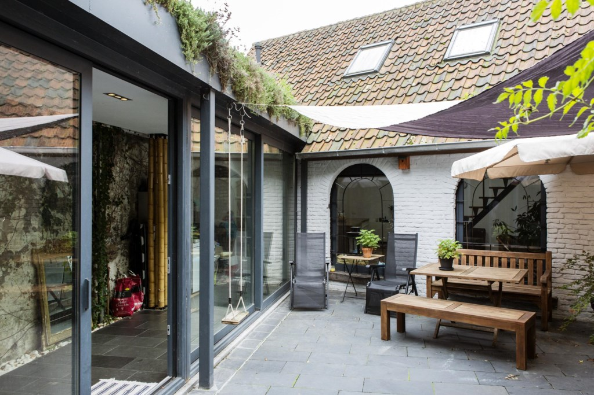

About us
Home about usBAMBOE ALS DRAGER VAN RIJHUIS EN OUDE PAARDENSTAL
Braziliaans bouwen in Gent
Cru Architecten verbouwden in Gent een rijhuis tot een b&b en de achterliggende paardenstal tot een kleine woning met een ruim gevoel – allemaal gedragen door bamboe.

De kracht van bamboe
Zo rotsvast dat ze bij hun terugkeer in 2006 in Gent een op te knappen rijhuis kochten in de Rabotwijk, en het verbouwden met bamboe. Ze gingen zelfs in avondschool een opleiding tot aannemer volgen.
‘Je eigen huis bouwen of verbouwen: het is een leerschool die ik elke architect aanraad.’
Ze wilden bamboe niet decoratief gebruiken, maar als dragend materiaal.
‘Je kan een stalen skelet perfect vervangen door bamboe, dat hebben labtesten uitgewezen’, vertelt Mouton.
‘Het potentieel van bamboe zit in zijn kracht, niet in zijn decoratief vermogen. Met staal ga je ook niet bloemschikken.’
In tropische landen wordt bamboe gretig gebruikt, omdat het er quasi gratis is.
‘Bovendien is het duurzamer dan staal, zelfs als je de vervuiling door het transport meetelt. Er is geen enkel materiaal dat er in een levenscyclusanalyse (die niet alleen berekent hoeveel een product vervuilt bij gebruik maar ook bij de productie, het transport en de vernietiging ervan, red.)
beter uitkomt. En dan moet je nog bedenken dat bamboe tijdens de groeifase heel wat CO2 uit de lucht opneemt. Het is een enorm ecologisch bouwmateriaal.’
Discrete drager
Bamboe als dragende structuur dus – en het is inderdaad discreet aanwezig, als vanzelfsprekend fundament van het huis.
Het dakgebinte bestaat volledig uit bamboe. De bamboezuilen in de passerelle, die het rijhuis verbindt met de achterliggende paardenstal, dragen elk maar liefst vier ton.
Daarnaast komt het slechts hier en daar terug in het interieur. Bijvoorbeeld in het zwart, als sfeervolle decoratie boven een van de bedden.
‘We wilden geen ingewikkelde vormen of andere aandachtstrekkers’, zegt Mouton. Daardoor krijgt het huis een strakke look.
Wel is er gekozen voor veel hout en andere natuurlijke materialen om de sfeer die de bamboe creëert, te versterken.
Daarnaast primeerden licht en lucht – zoveel mogelijk ramen, een open structuur in het rijhuis van boven tot beneden, en een ventilatiesysteem C.
Bamboe wordt wel gebruikt in de vloer.
Bamboeparket is erg dens; de vezels zijn uit elkaar getrokken en weer samengekleefd in verschillende richtingen.
Gasten welkom
De woning, vandaag bewoond door het jonge koppel Eva Joye en Colin Renkema, bestaat uit twee delen.
Vooraan het rijhuis, met zwarte gevel, dat ingericht is als b&b onder de naam Nest. Joye was op zoek naar een eigen huis met mogelijk een appartement erin om te verhuren.
Maar ze werd verliefd op het bamboehuis. ‘Toen we hier binnenstapten, hadden we meteen een waw-gevoel’, zegt Joye. Ze houden er nu al meer dan een jaar de b&b open.
Die bestaat uit een hal en beneden een keukentje en eetplaats, waar de gasten een selfservice-ontbijt vinden in hun persoonlijke koelkast. Een open trap leidt naar de twee kamers.
De eerste is een grote slaapkamer die door een opvallende, donkere valse muur wordt afgescheiden van de badkamer.
In de hoek daarvan de grote troef van de kamer: de jacuzzi.
De kamer erboven probeert de eerste nog te overtroeven met een ingebouwde sauna van waaruit je het water van het Verbindingskanaal kan zien. Die sluit aan bij de keuze voor hout en natuurlijke materialen doorheen het hele huis.
Joye en Renkema kozen ervoor om de inrichting even sober te houden als het huis zelf, met slechts hier en daar een in het oog springend detail.
De opvallende verlichtingselementen, waarin ook bamboe en baobab terugkeren, behielden ze.
Wonen in de paardenstal
Wonen doet het koppel achterin, in de verbouwde paardenstal.
Vroeger rustten daar de paarden die boten over het nabijgelegen Verbindingskanaal en de Brugse Vaart trokken.
Beneden is er een open woongedeelte met keuken en leefruimte, in de keuken een massief kookeiland. Achterin een badkamer met inloopdouche, en de slaapkamer.
Middenin de leefruimte de trap naar een kleine mezzanine.
De oppervlakte is beperkt, en toch voelt de ruimte niet krap aan.
‘We kregen tijdens de verbouwingen ook onze twee kinderen, dus als we dan al weinig ruimte hadden, dan wilden we toch een ruim gevoel creëren’, vertelt Mouton.
Om de lichtinval te maximaliseren, plaatsten de architecten extra veluxdakramen.
‘Er is in de paardenstal niet minder licht dan als je buiten zou lopen.’
Ook hier komt bamboe terug als dragende structuur in het dak.
Verder kozen de architecten ervoor om alvast de buitenkant van de paardenstal zo veel mogelijk te behouden. ‘De stal was te lieflijk om er veel aan te veranderen’, zegt Mouton. De hoefijzervormige, smeedijzeren ramen staan er nog altijd in, met nieuwe ruiten weliswaar.
En ook de originele dakpannen zijn gebleven.
Veelkleurig groendak
Achteraan in het rijhuis hebben Joye en Renkema nog een kleine gemeenschappelijke ruimte ingericht die de gasten mogen gebruiken, bijvoorbeeld om te werken; er staat een werktafel en in de vloer zitten stopcontacten.
De elektrische scooter van het koppel staat er te blinken, even decoratief als functioneel.
De passerelle die de paardenstal met die ruimte verbindt, is bedekt met een groendak, waarvan de klimplanten aan de zijkanten naar binnen vallen.
‘Het groendak vraagt weinig onderhoud en de kleuren variëren van seizoen tot seizoen’, vertelt Joye.
‘In de zomer overheersen groen en geel, in de herfst en winter zien we vooral bruin en rood.’
De passerelle zelf wordt geflankeerd door een ruwe bakstenen muur aan de ene kant en een glazen wand aan de andere, die zicht geeft op het binnentuintje en zo een buitengevoel creëert.
Het ingerichte terras met een oude houten schommel doet op deze druilerige herfstdag dromen van buiten ontbijten op warme zomerdagen. Joye en Renkema hopen hun activiteiten uit te breiden met bijvoorbeeld brunches, met de gasten op het terras.
Architecten Mouton en Dueninck wonen ondertussen opnieuw in Brazilië.
‘In België blijft er veel wantrouwen bij aannemers om met bamboe aan de slag te gaan’, vertelt Mouton.
‘Ik maakte het meermaals mee dat ze toch staal in de structuren wilden verwerken.’ Toen hij enkele jaren geleden de kans kreeg om te doctoreren in Brazilië, rond bamboe, nam hij dat aanbod dan ook met beide handen aan.
‘En het gemeenschapshuis in bamboe dat we al die jaren geleden hier bouwden, staat er nog steeds.’